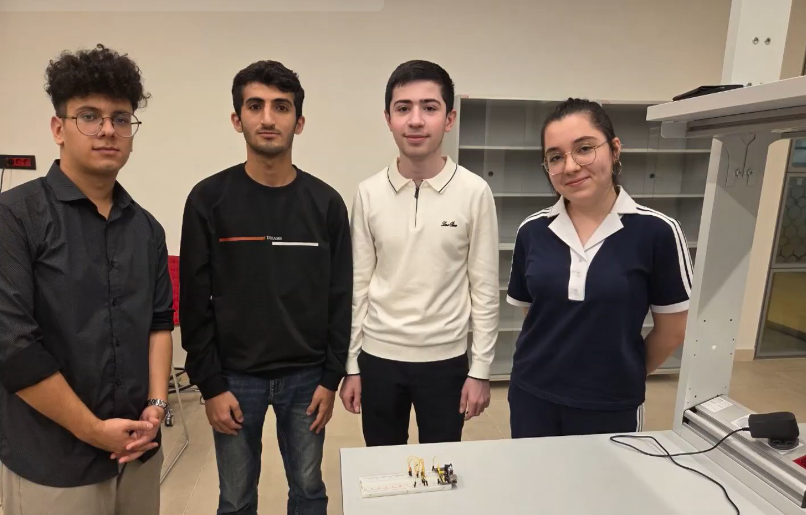
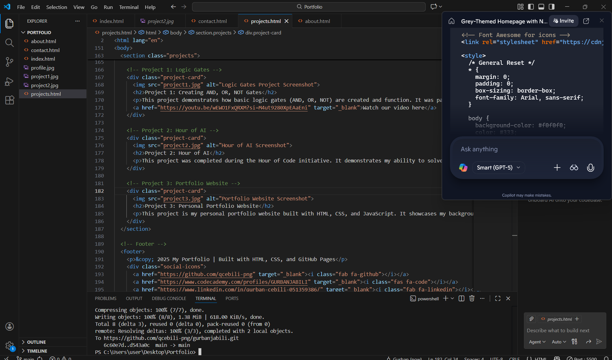

My Projects

Project 1: Creating AND, OR, NOT Gates
This project demonstrates how basic logic gates (AND, OR, NOT) are created and function. It was part of our coursework in SITE 1101 and shows the fundamentals of digital logic design.
Watch our video here
Project 2: Hour of AI
This project was completed during the Hour of Code initiative. It demonstrates my ability to solve coding challenges and apply programming concepts in a fun, interactive way.

Project 3: Personal Portfolio Website
This project is my personal portfolio website built with HTML, CSS, and JavaScript. It showcases my background, projects, and contact information, and is hosted on GitHub Pages.